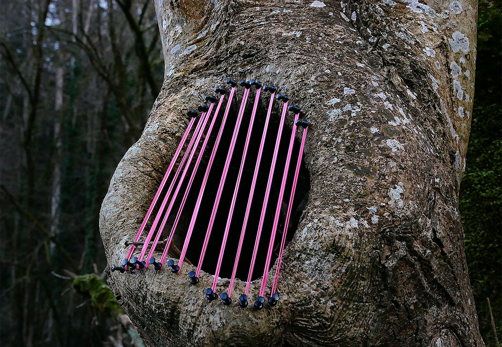

Stretch Art — Method

Stretch Art — Method
In Stretch Art, a geometric line segment acquires material expression through tension. I determine the positions of points and use rubber bands stretched between fasteners — primarily heavy-duty pushpins, sometimes nails or screws. Here, the distance between points exists not only as a geometric quantity but also as the span of material under load. Tension makes it possible not merely to denote a line segment, but to make the act of denoting itself dependent on the physical conditions in which it occurs.
I have exactly 22 points at my disposal, no more and no less. Theoretically, the distance between them can be infinitely small or infinitely large. But this is only in theory. In life, a certain proportionality to the human gaze is necessary, at which the mutual attraction, tension and strain between points become observable.
The tension of a line segment does not exist outside time. Time makes movement possible; fatigue accumulates through movement, matter disintegrates, connections break, statements acquire new meaning or lose it entirely, figures transform, angles and edges recede into the oblivion of abstraction — only the number of points remains unchanged: 22.
This is how it appears to my human gaze.